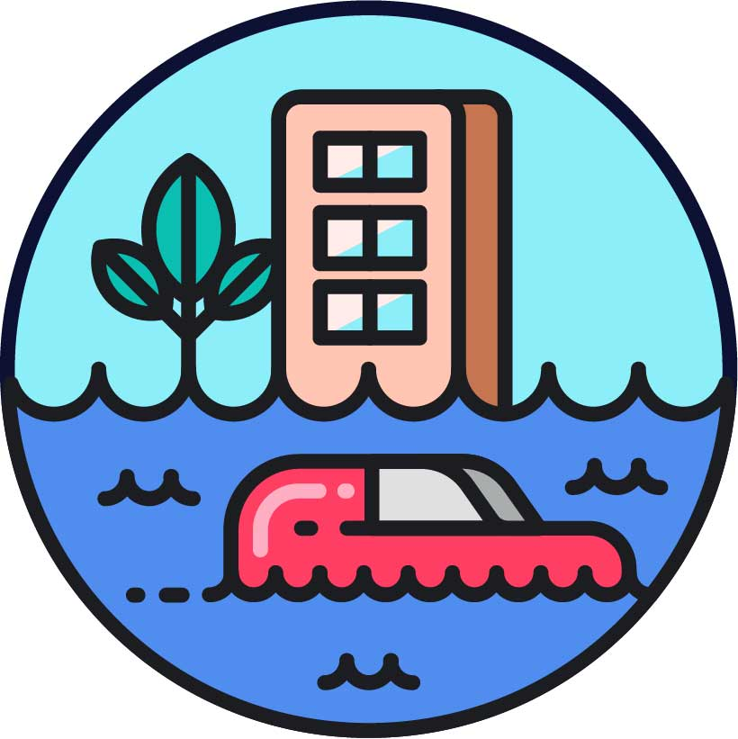

Presentation at the ICE conference
I recently presented my research at the ICE conference.
Read the LinkedIn update →Research Associate, Department of Land Economy
University of Cambridge
Scroll to read my research background and questions.
My research combines computational modeling and empirical analysis to understand how individual decisions, public policy, and environmental change shape urban and regional resilience. I focus on the links between land use, mobility, and climate risk, with an emphasis on equitable planning and adaptation.
My earlier studies examined household and government adaptation decisions under coastal flooding, evacuation behavior during compound hazards, and the relationships between social vulnerability, disaster assistance, insurance, and migration. This work established my interest in how behavioral and institutional responses influence who is exposed to risk and who benefits from adaptation.
My publications include work in Cities, Risk Analysis, Transportation, Sustainable Cities and Society, and Travel Behaviour and Society. Research and teaching across the United States, China, the Netherlands, and the United Kingdom have shaped my interdisciplinary approach to collaboration across planning, engineering, and environmental science.
I use agent-based models and spatial analysis to connect hazard exposure with household decisions and government interventions. By examining direct losses and indirect disruptions together, I investigate how adaptation strategies affect communities with different resources and vulnerabilities.
I explore how heterogeneous datasets, scenario analysis, and digital twin approaches can make complex interactions between social and physical systems more useful for planning. My aim is to communicate uncertainty, compare adaptation options, and support informed public engagement.
At Cambridge, I contribute to the DARe project, funded by UKRI and the Department for Transport, to support a decarbonized, adaptable, and climate-resilient transport system. I am developing an integrated land use and transport simulation framework that connects national socioeconomic scenarios with local daily mobility.
The framework uses graph neural networks to project commuting flows under alternative population and employment scenarios. I combine these flows with UK National Travel Survey data to generate scenario-consistent synthetic populations and daily activity patterns, then use agent-based transport simulation to examine individual travel behavior and network performance. I am incorporating the resulting mobility outputs into urban digital twin models to assess exposure to flooding and extreme heat. This workflow provides a basis for evaluating how future development patterns change travel demand, where people and transport infrastructure face climate hazards, and how adaptation measures could reduce those risks.
Email: yh593@cam.ac.uk
Office: University of Cambridge, Department of Land Economy
I recently presented my research at the ICE conference.
Read the LinkedIn update →Explore the Cambridgeshire & Peterborough case study through a video and research poster.
Explore the project →Ingenious Cities features our Cedar Key, Florida research on how urban digital twins and geospatial dashboards can support public engagement and coastal climate resilience.
Read the research spotlight →Our Shanghai case study examines compound flood risk mitigation in the Journal of Environmental Management.
Read the article →More updates on LinkedIn and Google Scholar.
My research develops data-driven techniques and micro-level urban simulation models to explore interactions between social and natural systems under compound climate hazards.

Advancing climate-resilient communities through computational methods to inform equitable adaptation strategies.
Learn more →Developing Agent-based models to measure travel behaviors under planning scenarios to promote resilient transport systems.
Learn more →Connecting graph neural networks, geospatial analysis, and urban digital twins to support scenario-based planning and climate resilience.
Learn more →Xinmeng Shan, Yu Han, Jiahong Wen, et al. (2025). Integrating nature-based solutions for compound flood risk mitigation in China: A case study of Shanghai. Journal of Environmental Management, 380
Changjie Chen(*), Yu Han, Andrea Galinski, et al. (2025). Integrating urban digital twins with cloud-based geospatial dashboards for coastal resilience planning: A case study in Florida. Journal of Planning Education and Research
Yu Han, Wei Zhai, Pallab Mozumder, Cees van Westen, Changjie Chen (2025). Modeling evacuation activities amid compound hazards: Insights from hurricane Irma in Southeast Florida. Travel Behaviour and Society, 38, 100933
Yu Han, Xinyue Ye, Chunwu Zhu (2024). The Unequal Impact of Disasters: Assessing the Interplay Between Social Vulnerability, Public Assistance, Flood Insurance, and Migration in the U.S. Urban Informatics, 3, 30
Yu Han, Xinyue Ye, Kayode Atoba, et al. (2024). Retreat from flood zones: Simulating land use changes in response to compound flood risk in coastal communities. Cities, 149, 104953
Creating inclusive learning environments that promote critical thinking across traditional disciplinary boundaries.
I'm always interested in discussing research collaborations, academic opportunities, and potential projects in climate adaptation and urban resilience.
Email: yh593@cam.ac.uk
Institution: University of Cambridge
Department of Land Economy